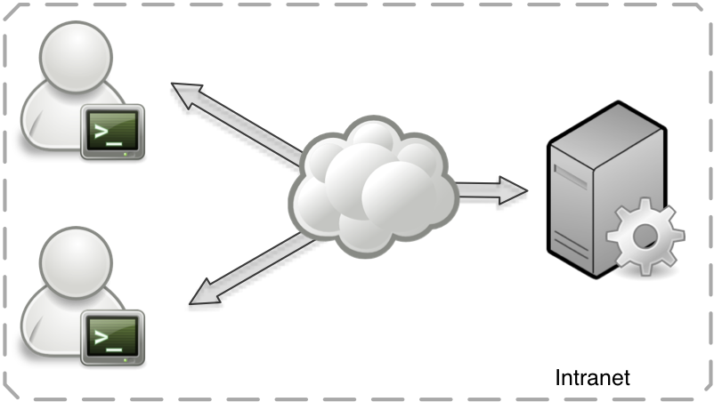
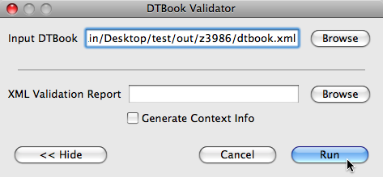
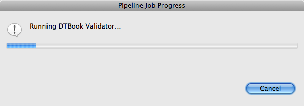
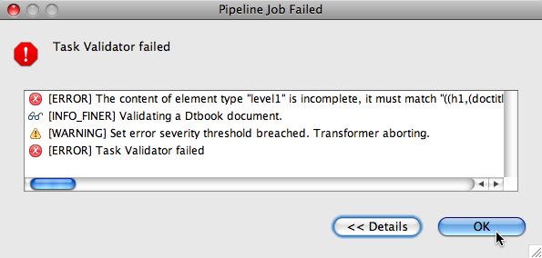
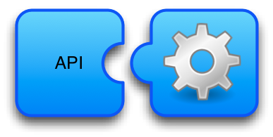
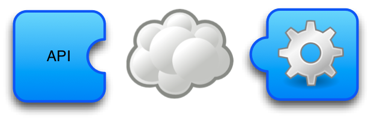
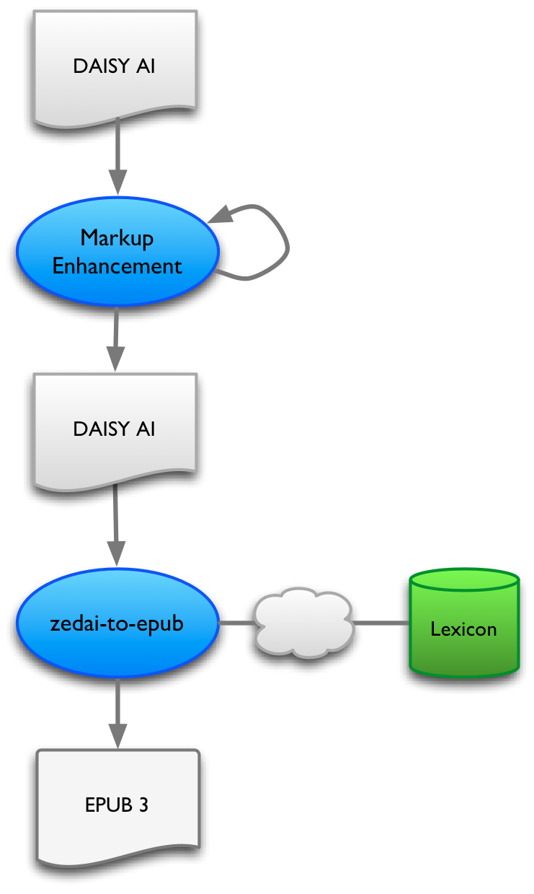
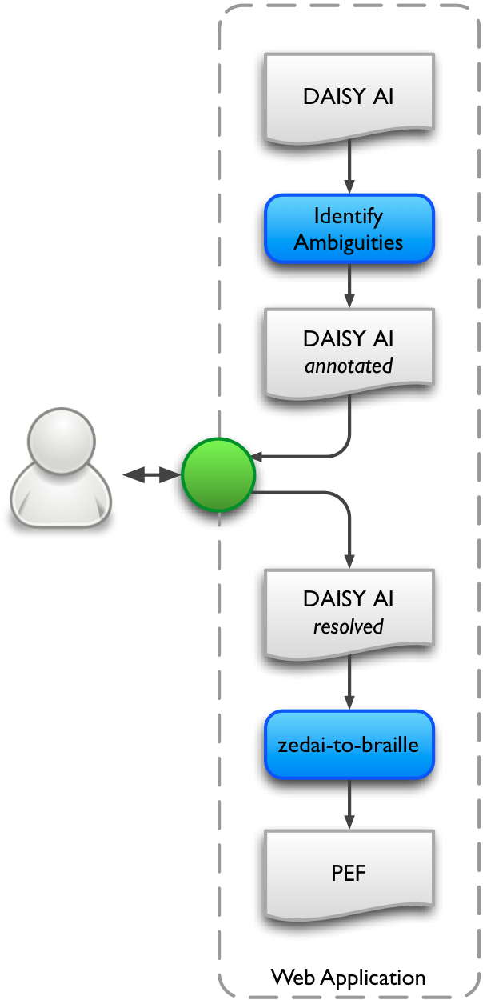

DAISY Pipeline 2 Overview
Use cases and workflows

February 16, 2011 - Romain Deltour
Remote vs Local
Organization-wide deployment

Minimalist graphical user interface (GUI)



- Dialog-based, minialist interface
- Job configuration dialog
- Easily embeddable in other applications
Embeddable Software Component
- Based on the web service API
- The Pipeline 2 is launched as daemon process
- Supports local or remote setups
- Can provide a native facade API


Feature highlights: Processing
Non-linear workflows
- Example: if-then-else
- Built in XProc
XSLT processing
- Example: DTBook to ZedAI
- Set of modular XSLTs
- XSLT 1.0 or XSLT 2.0
- Built in XProc
Third-party executable
- Example: epubcheck
- Output is converted as XML
- Some integration limitations
Web service calls
- Example: invoke a remote lexicon API
- Built in XProc, via HTTP
- Allow distributed computing
Feature highlights: File manipulations
File set manipulation
- populate
- augment
- union/intersection/difference
- copy to the file system
File system operations
- usual operations: move, copy, delete, create directories, etc
Feature highlights: Validation
Schema-based validation
- RelaxNG, XML Schema, NVDL, Schematron, (DTD)
- Example: DTBook → RelaxNG validation
- Example: ZedAI - RelaxNG + Schematron validation
Via third-party tools
- Example: ZedVal, epubcheck
- again, remote or local calls
Custom validators
- Using XProc logic
- Requires more development
Example: TTS-aware EPUB 3 production

DAISY AI
<p>Have you seen the movie "La vita e bella" ?</p>
Rich DAISY AI
<p>Have you seen the movie <name>"La vita e bella"</name> ?</p>
TTS-annotated HTML
<p>Have you seen the movie <span ssml:alphabet="ipa"ssml:ph="ˈlɑ ˈviːɾə ˈʔeɪ ˈbɛlə">"La vita e bella"</span> ?</p>
Example: Interactive Workflow
Use case from the Braille WG: identify apostrophes vs. single quotes

DAISY AI
<p>don't do 'that'</p>
DAISY AI annotated
<p>don<char type="quote-or-apos">'</char>t do <char type="quote-or-apos">'</char>that<char type="quote-or-apos">'</char></p>
DAISY AI resolved
<p>don<char type="apos">'</char>t do <char type="left-quote">'</char>that<char type="rigth-quote">'</char></p>
←
→
/
#